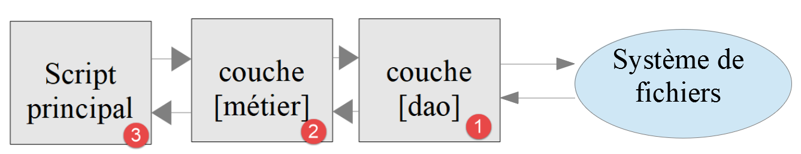
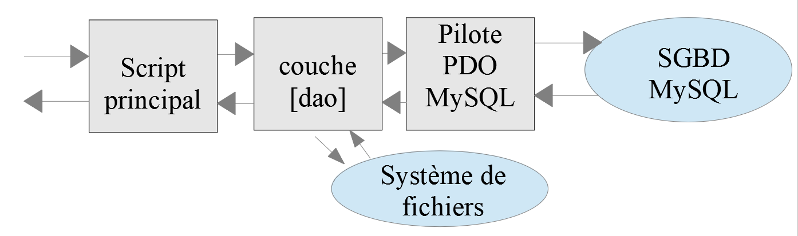
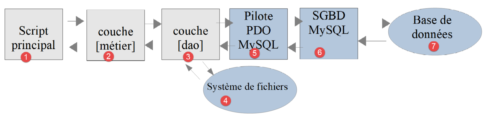

13. Exercice d'application – version 5
Nous avons déjà écrit plusieurs versions de cet exercice. La dernière version utilisait une architecture en couches :

La couche [dao] implémente une interface [InterfaceDao]. Nous avons construit une classe implémentant cette interface :
- [DaoImpotsWithTaxAdminDataInJsonFile] qui allait chercher les données fiscales dans un fichier JSON .
Nous allons implémenter l'interface [InterfaceDao] par une nouvelle classe [DaoImpotsWithTaxAdminDataInDatabase] qui ira chercher les données de l'administration fiscale dans une base de données MySQL.
13.1. Création de la base de données [dbimpots-2019]
En suivant l'exemple du chapitre précédent, nous construisons une base de données MySQL nommée [dbimpots-2019] dont le propriétaire sera l'utilisateur [admimpots] avec le mot de passe [mdpimpots]. Cette base aura deux tables :
- la table [tbtranches] contiendra les tranches d'imposition ;
- la table [tbconstantes] contiendra les constantes du calcul de l'impôt .
Le cours PHP 7 créait la base, l'utilisateur et les tables avec l'assistant de [phpMyAdmin], puis exportait la structure obtenue dans un fichier SQL. Nous faisons le chemin inverse : nous écrivons directement le script SQL [dbimpots-2019.sql], placé dans le dossier [Data] de la version 5 :
Commentaires
- ligne 7 : on supprime la base [dbimpots-2019] si elle existe. Le script peut ainsi être exécuté de nouveau pour régénérer la base si elle a été détruite ou altérée. Le nom de la base contient un tiret : il doit être entouré d'apostrophes inversées ` (backquotes) pour que MySQL ne le prenne pas pour une soustraction ;
- ligne 8 : création de la base avec le jeu de caractères [utf8mb4] ;
- lignes 11-13 : l'utilisateur [admimpots] de mot de passe [mdpimpots] est (re)créé. Il a tous les droits sur la base [dbimpots-2019] ;
- ligne 16 : les ordres suivants s'appliquent à la base [dbimpots-2019] ;
- lignes 19-25 : la table [tbtranches] a quatre colonnes :
- [id] est un entier, clé primaire de la table, et sera auto-incrémenté par le SGBD ([AUTO_INCREMENT]). Cela signifie que MySQL va gérer lui-même les valeurs de la clé primaire au moment des insertions : il affectera la valeur 1 à la clé primaire de la première insertion, puis 2 à la suivante, etc. ;
- [limites] est un nombre décimal à 10 chiffres dont 2 décimales ([DECIMAL(10, 2)]). Elle contiendra les éléments de la colonne [limites] des tranches d'impôt ;
- [coeffr] est un nombre décimal à 6 chiffres dont 2 décimales. Elle contiendra les éléments de la colonne [coeffR] des tranches d'impôt ;
- [coeffn] est un nombre décimal à 10 chiffres dont 2 décimales. Elle contiendra les éléments de la colonne [coeffN] des tranches d'impôt ;
- lignes 28-41 : la table [tbconstantes] a une clé primaire [id] et une colonne décimale par constante de calcul de l'impôt. Elle n'aura qu'une ligne .
Le type [DECIMAL] stocke les nombres de façon exacte, contrairement aux types réels [FLOAT] et [DOUBLE] qui stockent une valeur approchée en binaire : 0.14 est stocké exactement comme 0.14.
On exécute ce script dans le terminal de [Laragon] ouvert dans le dossier [version-05/Data] par la commande :
Si tout se passe bien, rien n'est affiché. On vérifie le résultat en se connectant sous l'identité de [admimpots] :
- ligne 6 : la colonne [id] est clé primaire (PRI) et ses valeurs sont gérées par MySQL (auto_increment) .
On peut aussi bien sûr ouvrir et exécuter le script [dbimpots-2019.sql] dans [HeidiSQL] ou [phpMyAdmin], et y examiner la structure des tables.
13.2. Organisation du code
Pour mieux montrer le rôle des différents scripts PHP que nous écrivons, nous allons organiser le code de la version 5 en dossiers :
- [Entities] : les entités de l'application, objets échangés entre couches ;
- [Utilities] : les utilitaires de l'application ;
- [Data] : les données utilisées ou produites par l'application, et le script SQL de la base. Nous prenons ici la décision de n'utiliser que des fichiers JSON pour les fichiers texte. Ceux-ci présentent plusieurs avantages :
- ils sont reconnus par beaucoup d'outils ;
- ces outils ont une coloration syntaxique. Par ailleurs, la notation JSON a des règles. Lorsque celles-ci ne sont pas respectées, les outils le signalent. Par exemple, une erreur difficile à détecter dans un fichier texte basique est l'utilisation de la lettre O majuscule à la place du chiffre zéro. Si dans le fichier JSON on écrit par inadvertance ["plafondRevenusCouplePourReduction": 42O74], [VS Code] souligne en rouge la valeur 42O74, qui n'est ni un nombre, ni une chaîne entre guillemets, et l'onglet [Problèmes] affiche l'erreur. L'attention du développeur est attirée par la faute et il peut la corriger ;
- [Dao] : les interfaces, trait et classes de la couche [dao] ;
- [Metier] : l'interface et la classe de la couche [métier]. Le cours PHP 7 nommait ce dossier [Métier]. Nous évitons les caractères accentués dans les noms de dossiers et de fichiers : ils sont source de problèmes lorsque les fichiers passent d'un système à un autre (archives zip, dépôts Git…) ;
- [Main] : les scripts principaux de la version 5 ;
- [Tests] : les tests [PHPUnit] de la version 5 .
La version 5 a deux objectifs distincts :
- remplir la base MySQL [dbimpots-2019] avec le contenu du fichier JSON [Data/taxadmindata.json] ;
- implémenter le calcul de l'impôt avec des données fiscales venant désormais de la base MySQL [dbimpots-2019] .
Nous allons traiter ces deux objectifs séparément.
13.3. Remplissage de la base de données [dbimpots-2019]
13.3.1. Objectif
Le fichier [Data/taxadmindata.json] contient les données de l'administration fiscale. C'est celui de la version 4 :
Notre objectif est de transférer ces données dans la base MySQL [dbimpots-2019] créée précédemment.
13.3.2. Les entités
Les entités sont les objets échangés entre les couches de l'application. Trois d'entre elles viennent de la version 4 et sont reprises sans aucune modification :
- l'exception [ExceptionImpots] ;
- la classe [readonly] [TaxAdminData] des données de l'administration fiscale, construite par ses méthodes statiques [fromJsonFile] et [fromArray] ;
- la classe [readonly] [TaxPayerData] des données d'un contribuable et des résultats du calcul de son impôt .
Nous en ajoutons une quatrième, l'entité [Database], qui décrit la base de données.
13.3.2.1. Pourquoi pas de classe de base [BaseEntity] ?
Le cours PHP 7 introduisait à cet endroit une classe parent [BaseEntity] dont dérivaient toutes les entités. Elle reposait sur une règle : les attributs d'une entité ont les mêmes noms que les clés du fichier JSON qu'elle encapsule. [BaseEntity] savait alors initialiser n'importe quelle entité à partir d'un fichier JSON ou d'un tableau associatif par la boucle :
Les attributs des entités étaient déclarés [protected] (sans type) pour que la classe parent puisse les modifier, et chaque entité ajoutait ses getters et ses setters. Nous ne reprenons pas cette solution :
- la boucle ci-dessus crée silencieusement un attribut dynamique lorsqu'une clé du fichier JSON est mal orthographiée. C'est déprécié depuis PHP 8.2, et interdit pour les classes [readonly] ;
- les entités étaient modifiables par n'importe quelle couche, via leurs setters ou la méthode [setFromArrayOfAttributes]. Nos entités sont immuables : une couche ne peut pas modifier par erreur un objet qu'elle a reçu d'une autre ;
- la règle « mêmes noms dans le JSON et dans la classe » reste la nôtre, mais PHP 8 l'exploite directement : l'expression [new self(...$tableau)] transforme les clés du tableau en arguments nommés du constructeur (PHP 8.1). C'est PHP qui vérifie alors qu'aucune clé ne manque, qu'aucune n'est inconnue et que chaque valeur a le bon type. Il n'y a plus de code commun à factoriser dans une classe parent .
Enfin, la version 4 a déjà doté la classe [TaxAdminData] de la méthode [fromArray]. Nous allons voir qu'elle suffit pour construire un objet [TaxAdminData] à partir des données lues dans la base. Une conséquence importante est que la couche [métier] de la version 4 sera reprise sans modification : dans le cours PHP 7, le changement des entités avait obligé à modifier la couche [métier].
13.3.2.2. L'entité [Database]
L'entité [Database] servira à encapsuler les données du fichier JSON [Data/database.json] suivant :
Ses attributs décrivent les caractéristiques de la base de données MySQL [dbimpots-2019] :
Attribut | Rôle |
dsn | le DSN de la base |
id | le propriétaire de la base |
pwd | son mot de passe |
tableTranches | le nom de la table contenant les tranches d'imposition |
colId / colLimites / colCoeffR / colCoeffN | les noms des colonnes de la table [tableTranches] |
tableConstantes | le nom de la table contenant les constantes de calcul de l'impôt |
colPlafondQfDemiPart / colPlafondRevenusCelibatairePourReduction / colPlafondRevenusCouplePourReduction / colValeurReducDemiPart / colPlafondDecoteCelibataire / colPlafondDecoteCouple / colPlafondImpotCelibatairePourDecote / colPlafondImpotCouplePourDecote / colAbattementDixPourcentMax / colAbattementDixPourcentMin | les noms des colonnes de la table [tableConstantes] contenant les constantes de calcul de l'impôt |
Pourquoi nommer les tables et les colonnes alors qu'on connaît déjà leurs noms et que ce n'est pas quelque chose amené à changer ? Après le SGBD MySQL, on va utiliser le SGBD PostgreSQL pour stocker les données de l'administration fiscale. Or les noms des colonnes et des tables PostgreSQL ne suivent pas les mêmes règles que ceux de MySQL. On va être obligé d'utiliser d'autres noms. C'est également vrai pour d'autres SGBD. Si on veut avoir du code portable entre SGBD, il est alors préférable d'utiliser des paramètres plutôt que les noms en dur des tables et colonnes. Par rapport au cours PHP 7, nous avons ajouté l'attribut [colId], le nom de la colonne clé primaire de la table des tranches : nous en aurons besoin pour relire les tranches dans l'ordre où elles ont été insérées.
La classe [Database] est la suivante [Entities/Database.php] :
Commentaires
- ligne 9 : comme [TaxAdminData], la classe [Database] est immuable et ne peut être dérivée ;
- lignes 12-23 : les noms des dix constantes de calcul de l'impôt. Ce sont aussi les noms des attributs de la classe [TaxAdminData] ;
- lignes 26-50 : le constructeur, privé, déclare par promotion un attribut public de type [string] pour chaque clé du fichier [database.json], avec le même nom ;
- ligne 30 : l'attribut PHP 8.2 [#[\SensitiveParameter]] marque le paramètre comme sensible. Si une exception est lancée pendant l'exécution du constructeur, la valeur du mot de passe n'apparaîtra pas dans la pile des appels (stack trace) de l'exception, qui est souvent écrite dans des fichiers de logs : elle y est remplacée par un objet [SensitiveParameterValue] ;
- lignes 53-68 : la méthode statique [fromJsonFile] construit un objet [Database] à partir d'un fichier JSON :
- ligne 56 : la lecture et le décodage du fichier JSON sont confiés à la classe [Utilitaires] présentée plus loin. Ils peuvent lancer une exception [ExceptionImpots] ;
- ligne 58 : le JSON doit être un objet, donc un tableau associatif et non une liste ;
- ligne 63 : les clés du tableau [$data] deviennent des arguments nommés du constructeur. Si une clé manque, PHP lance une erreur [ArgumentCountError] ; si une clé est inconnue, une erreur [Error] (« Unknown named parameter ») ; si une valeur n'est pas une chaîne, une erreur [TypeError]. Ces trois erreurs dérivent de la classe [Error] ;
- lignes 64-66 : on intercepte l'erreur et on la transforme en [ExceptionImpots] de code 21, en gardant l'erreur originelle ([$ex]) comme exception précédente. Le message de l'erreur PHP, inclus dans le message, indique précisément ce qui ne va pas ;
- lignes 71-79 : la méthode [colonnesConstantes] rend le tableau associatif [nom de la constante => nom de la colonne]. Pour la constante [plafondQfDemiPart], le nom de la colonne est dans l'attribut [colPlafondQfDemiPart]. La fonction [ucfirst] met en majuscule la première lettre d'une chaîne, et la syntaxe [$this->{"col" . ucfirst($constante)}] désigne l'attribut dont le nom est la valeur de l'expression entre accolades. Cette méthode nous évitera d'écrire dix fois du code presque identique dans la couche [dao] .
13.3.2.3. La classe [Utilitaires]
La version 4 utilisait la classe [Utilitaires] pour enlever la marque de fin de ligne des lignes d'un fichier texte. Nous n'utilisons plus que des fichiers JSON : la classe [Utilitaires] rassemble désormais la lecture et l'écriture des fichiers JSON [Utilities/Utilitaires.php] :
Commentaires
- lignes 17-30 : la méthode [lireFichierJson] lit un fichier JSON et rend son contenu décodé, de type quelconque ([mixed]) : un objet JSON donne un tableau associatif, un tableau JSON une liste. Le code est celui que nous avons écrit dans la méthode [TaxAdminData::fromJsonFile] de la version 3. Les erreurs sont signalées par une [ExceptionImpots] de code 15 (fichier illisible) ou 16 (JSON invalide) ;
- lignes 33-40 : la méthode [écrireFichierJson] enregistre une valeur au format JSON dans un fichier texte. Les options de [json_encode] sont combinées par l'opérateur [|] :
- [JSON_PRETTY_PRINT] produit un JSON indenté, facile à lire ;
- [JSON_UNESCAPED_UNICODE] écrit les caractères accentués tels quels (marié) au lieu de leur code (mari\u00e9) ;
- [JSON_PRESERVE_ZERO_FRACTION] écrit le réel 0.0 sous la forme 0.0 et non 0 : on distingue ainsi les réels des entiers dans le fichier produit ;
- [JSON_THROW_ON_ERROR] fait lancer une exception [JsonException] si la valeur ne peut être codée en JSON .
13.3.3. La couche [dao]
Maintenant nous pouvons écrire le code qui va transférer les données du fichier JSON [taxadmindata.json] dans les tables [tbtranches, tbconstantes] de la base MySQL [dbimpots-2019]. Nous adopterons l'architecture suivante :

La couche [dao] implémentera l'interface [InterfaceDao4TransferAdminData2Database] suivante [Dao/InterfaceDao4TransferAdminData2Database.php] :
- ligne 13 : la méthode [transferAdminData2Database] a pour rôle de stocker les données de l'administration fiscale dans une base de données .
L'interface [InterfaceDao4TransferAdminData2Database] sera implémentée par la classe [DaoTransferAdminDataFromJsonFile2Database] suivante [Dao/DaoTransferAdminDataFromJsonFile2Database.php] :
Commentaires
Nous utilisons ici ce que nous avons appris dans le chapitre sur MySQL.
- ligne 9 : la classe [DaoTransferAdminDataFromJsonFile2Database] implémente l'interface [InterfaceDao4TransferAdminData2Database] ;
- ligne 12 : l'attribut [$database] est l'objet de type [Database] encapsulant les données du fichier [database.json] ;
- ligne 14 : l'attribut [$taxAdminData] est l'objet de type [TaxAdminData] encapsulant les données du fichier [taxadmindata.json] ;
- lignes 17-22 : le constructeur reçoit en paramètres les noms des fichiers [database.json, taxadmindata.json] et initialise les deux attributs. Si l'un des fichiers est incorrect, une exception [ExceptionImpots] remonte au code appelant ;
- ligne 26 : on implémente l'unique méthode de l'interface [InterfaceDao4TransferAdminData2Database] ;
- ligne 31 : on ouvre la connexion à la base de données. Notez la notation [\PDO] pour désigner la classe [PDO] de PHP. En effet, comme on est dans l'espace de noms [Application], si on écrivait simplement [PDO], ce nom relatif serait préfixé par l'espace de noms courant et désignerait donc la classe [Application\PDO] qui n'existe pas. La méthode [PDO::connect] rend ici un objet [Pdo\Mysql] puisque le DSN commence par [mysql:]. Rien dans cette classe ne dépend de MySQL : c'est le DSN, lu dans le fichier [database.json], qui détermine le SGBD utilisé ;
- lignes 33-39 : on remplit les tables [tbtranches, tbconstantes] au sein d'une transaction. Les méthodes [fillTableTranches] et [fillTableConstantes] lancent une [PDOException] dès que quelque chose se passe mal. Dans ce cas, l'exécution se poursuit dans la clause [catch] et la base reste dans son état initial : on ne risque pas d'avoir une table [tbtranches] remplie et une table [tbconstantes] vide ;
- lignes 40-47 : cas où une exception a été lancée par le code. Si une transaction est en cours, elle est annulée. Puis on lance une exception de type [ExceptionImpots], de code 30, avec le message de l'exception originelle, qui devient l'exception précédente. Le code appelant n'a ainsi qu'un type d'exception à gérer ;
- ligne 49 : le cours PHP 7 fermait la connexion dans une clause [finally] par l'instruction [$connexion = NULL]. C'est inutile : la variable locale [$connexion] disparaît à la fin de la méthode, et avec elle la connexion .
Le code de la méthode [fillTableTranches] est le suivant :
Commentaires
- ligne 53 : la méthode [fillTableTranches] reçoit en paramètre une connexion ouverte. On sait de plus qu'une transaction a démarré au sein de cette connexion ;
- lignes 56-57 : deux raccourcis pour éviter d'avoir à écrire [$this->database] et [$this->taxAdminData] dans tout le code. On a là des copies de références d'objets et non pas des copies des objets eux-mêmes ;
- ligne 59 : on supprime le contenu actuel de la table des tranches. Le nom de la table est inséré dans la chaîne par la syntaxe ["$database->tableTranches"] : PHP remplace l'expression par la valeur de l'attribut ;
- lignes 61-64 : on prépare l'insertion de lignes dans la table. On utilise ici les noms de la table et des colonnes fournis par l'attribut [$database]. Les noms des tables et des colonnes ne peuvent pas être des paramètres d'un ordre préparé : seules les valeurs peuvent l'être. C'est pourquoi ils sont insérés dans le texte de l'ordre SQL. Ils viennent d'un fichier de configuration et non d'un utilisateur : il n'y a pas de risque d'injection SQL ;
- lignes 66-72 : on exécute autant de fois que nécessaire l'instruction d'insertion préparée, une fois par tranche d'impôt. [$i] est le numéro de la tranche, qui sert d'indice dans les tableaux [coeffR] et [coeffN] .
Le code de la méthode [fillTableConstantes] est le suivant :
Commentaires
- ligne 76 : la méthode [fillTableConstantes] reçoit elle aussi une connexion ouverte dans laquelle une transaction est en cours ;
- ligne 81 : la table [tbconstantes] est vidée ;
- ligne 83 : le tableau [nom de la constante => nom de la colonne], par exemple [["plafondQfDemiPart" => "plafondQfDemiPart", ...]] ;
- ligne 85 : les noms des paramètres de l'ordre préparé : [[":plafondQfDemiPart", ...]]. Ce sont les noms des constantes précédés de deux-points ;
- lignes 86-89 : préparation de l'ordre SQL d'insertion. La fonction [implode] construit la liste des colonnes et celle des paramètres, séparés par des virgules. On obtient l'ordre [insert into tbconstantes (plafondQfDemiPart, ...) values (:plafondQfDemiPart, ...)]. Le cours PHP 7 écrivait cet ordre en entier, colonne par colonne, sur une vingtaine de lignes ;
- lignes 91-94 : le tableau des valeurs des paramètres [nom de la constante => valeur]. La syntaxe [$this->taxAdminData->$constante] désigne l'attribut de l'objet [TaxAdminData] dont le nom est la valeur de la variable [$constante] ;
- ligne 96 : exécution de l'ordre d'insertion. Il n'y a qu'une ligne à insérer .
13.3.4. Le script principal
Le script principal [Main/MainTransferAdminDataFromJsonFile2MySQLDatabase.php] s'appuie sur la couche [dao] pour opérer le transfert de données :
Commentaires
- lignes 10-15 : chargement des classes et interfaces nécessaires au transfert. Les chemins sont relatifs au dossier du script ([Main]) : [__DIR__ . "/../Entities"] désigne le dossier [Entities] voisin ;
- lignes 18-19 : les chemins des deux fichiers JSON, eux aussi relatifs au dossier du script. Le cours PHP 7 utilisait des chemins relatifs au dossier courant (["../Data/database.json"]) : le script ne fonctionnait que s'il était lancé depuis le dossier [Main] ;
- ligne 23 : on instancie la couche [dao] en passant au constructeur les noms des deux fichiers JSON ;
- ligne 25 : on opère le transfert de données ;
- lignes 27-29 : on affiche le code et le message de l'exception. Le cours PHP 7 utilisait ici la fonction [utf8_encode], dépréciée depuis PHP 8.2 et inutile puisque tous nos messages sont en UTF-8 .
Lorsque nous exécutons ce script dans un terminal ouvert dans le dossier [Main], nous obtenons le résultat suivant :
et le contenu suivant dans la base de données :
- colonne [id] : les valeurs attribuées par MySQL à la clé primaire. La numérotation démarre à 1. Si on exécute de nouveau le script, les lignes sont supprimées puis réinsérées et MySQL continue la numérotation (6, 7…) : une valeur de clé auto-incrémentée n'est jamais réutilisée ;
- les nombres ont deux décimales, conformément au type [DECIMAL(10, 2)] des colonnes .
L'option [\G] à la fin de l'ordre SQL fait afficher chaque ligne verticalement, une colonne par ligne d'écran, ce qui est plus lisible pour une table ayant beaucoup de colonnes :
13.4. Calcul de l'impôt
13.4.1. Architecture
La version 4 de l'application de calcul de l'impôt utilisait une architecture en couches :
La couche [dao] implémente une interface [InterfaceDao]. La classe [DaoImpotsWithTaxAdminDataInJsonFile] de la version 4 allait chercher les données fiscales dans un fichier JSON. Nous allons implémenter l'interface [InterfaceDao] par une nouvelle classe [DaoImpotsWithTaxAdminDataInDatabase] qui ira chercher les données de l'administration fiscale dans la base de données MySQL. La couche [dao], comme précédemment, écrira les résultats et les erreurs dans des fichiers texte et trouvera les données des contribuables également dans un fichier texte. Seulement cette fois-ci, ces fichiers texte seront des fichiers JSON. Par ailleurs, nous savons que si nous continuons à respecter l'interface [InterfaceDao], la couche [métier] n'aura pas à être modifiée.

13.4.2. L'entité [TaxPayerData]
La classe [TaxPayerData] de la version 4 encapsule les données d'un contribuable [marié, enfants, salaire] et les résultats du calcul de son impôt [impôt, surcôte, décôte, réduction, taux]. Elle est reprise telle quelle. Les données des contribuables sont désormais dans le fichier JSON [Data/taxpayersdata.json] suivant :
Les clés des objets JSON sont les noms des attributs de la classe [TaxPayerData]. On notera :
- ligne 8 : le contribuable n° 1 (les numéros commencent à 0) est erroné : ses trois données sont invalides ;
- ligne 14 : le nombre d'enfants du contribuable n° 2 est donné sous la forme d'une chaîne de caractères. Nous l'accepterons ;
- les onze autres contribuables sont ceux des tests officiels de l'administration fiscale, utilisés depuis la version 1 .
13.4.3. La couche [dao]
13.4.3.1. L'interface [InterfaceDao]
L'interface [InterfaceDao] de la version 4 est reprise sans modification [Dao/InterfaceDao.php] :
Les méthodes [getTaxPayersData] et [saveResults] reçoivent des noms de fichiers : rien n'y indique qu'il s'agit de fichiers texte basiques ou de fichiers JSON. L'interface reste donc valable.
13.4.3.2. Le trait [TraitDao]
Le trait [TraitDao] implémente les méthodes [getTaxPayersData] et [saveResults] de l'interface [InterfaceDao]. Comme on est passé de fichiers texte basiques à des fichiers JSON, il nous faut le réécrire [Dao/TraitDao.php] :
Commentaires
- lignes 13-44 : la méthode [getTaxPayersData] reçoit en paramètres :
- [$taxPayersFilename] : le nom du fichier JSON des données des contribuables [taxpayersdata.json] ;
- [$errorsFilename] : le nom du fichier JSON des erreurs [errors.json] ;
- ligne 17 : le contenu du fichier JSON des données des contribuables est décodé dans le tableau [$contribuables]. Si le fichier JSON s'avère inexploitable, une exception [ExceptionImpots] est lancée ;
- ligne 18 : le contenu doit être un tableau JSON, donc une liste PHP. Sinon, une exception de code 17 est lancée ;
- ligne 22 : le tableau [$taxPayersData] va contenir les données des contribuables encapsulées dans des objets de type [TaxPayerData] ;
- ligne 24 : on va cumuler les erreurs dans le tableau [$errors] ;
- lignes 26-39 : construction du tableau [$taxPayersData]. Avant d'être encapsulées dans un objet [TaxPayerData], les données sont vérifiées par la méthode [check], qui rend la liste des attributs erronés, vide si les données sont correctes :
- lignes 30-34 : cas où les données sont valides. Un nouvel objet [TaxPayerData] est construit et ajouté au tableau [$taxPayersData]. Le statut marital est mis en minuscules, le nombre d'enfants et le salaire convertis en entiers : [(int) "2"] vaut 2 ;
- ligne 37 : cas où les données sont invalides. On note dans l'erreur le numéro du contribuable erroné dans le tableau JSON pour que l'utilisateur puisse le retrouver, puis l'erreur est ajoutée au tableau [$errors] ;
- ligne 41 : on enregistre les erreurs rencontrées dans le fichier JSON [$errorsFilename]. Le cours PHP 7 écrivait une chaîne JSON par erreur, une par ligne : avec plusieurs erreurs, le fichier n'était pas un fichier JSON valide. Nous écrivons un tableau JSON des erreurs ;
- ligne 43 : on rend le tableau des objets [TaxPayerData] construits : c'était l'objectif de la méthode ;
- lignes 47-70 : la méthode privée [check] vérifie la validité des données d'un contribuable. Le paramètre [$contribuable] est de type [mixed] : un élément du tableau JSON peut être n'importe quoi (un objet, un nombre, une chaîne…). La méthode cumule les attributs erronés dans le tableau [$erreurs] sous la forme de tableaux [attribut erroné => valeur] :
- ligne 50 : l'élément doit être un objet JSON ;
- ligne 55 : l'opérateur [??] (null coalescing) rend la valeur de [$contribuable["marié"]] si elle existe et n'est pas [null], et [null] sinon. On évite ainsi l'avertissement que provoquerait une clé absente ;
- lignes 56-58 : le statut marital doit être une chaîne valant oui ou non, sans tenir compte de la casse et des espaces ;
- lignes 61-68 : le nombre d'enfants et le salaire doivent être des entiers positifs ou nuls, donnés sous la forme d'un nombre JSON (2) ou d'une chaîne ("2"). Une chaîne doit être formée de chiffres, éventuellement entourés d'espaces : c'est ce que vérifie l'expression régulière [/^\s*\d+\s*$/]. On notera la comparaison [preg_match(...) === 1] : la fonction [preg_match] rend 1 si la chaîne correspond au modèle, 0 sinon, et [false] en cas d'erreur ;
- lignes 74-78 : l'implémentation de la méthode [saveResults] de l'interface [InterfaceDao]. Le tableau des objets [TaxPayerData] est directement enregistré au format JSON : la fonction [json_encode] transforme un objet en objet JSON dont les clés sont les noms de ses attributs publics. Le cours PHP 7 construisait la chaîne JSON du tableau « à la main », en concaténant les chaînes JSON des objets séparées par des virgules et en ajoutant les crochets .
13.4.3.3. La classe [DaoImpotsWithTaxAdminDataInDatabase]
La classe [DaoImpotsWithTaxAdminDataInDatabase] implémente l'interface [InterfaceDao] de la façon suivante [Dao/DaoImpotsWithTaxAdminDataInDatabase.php] :
Commentaires
- ligne 6 : on garde l'espace de noms déjà utilisé pour les autres classes de l'application ;
- ligne 9 : la classe [DaoImpotsWithTaxAdminDataInDatabase] implémente l'interface [InterfaceDao] ;
- ligne 12 : on importe le trait [TraitDao]. On sait que ce trait implémente une partie de l'interface. La seule méthode qui reste à implémenter est la méthode [getTaxAdminData], qui se contente de rendre l'attribut privé [$taxAdminData]. On en déduit que le constructeur devra initialiser cet attribut. C'est son unique rôle ;
- ligne 20 : le constructeur reçoit comme unique paramètre le nom du fichier JSON [database.json] qui définit la base de données MySQL [dbimpots-2019] ;
- ligne 23 : le fichier JSON est utilisé pour créer un objet de type [Database] mémorisé dans l'attribut [$database]. Si le fichier JSON n'a pu être exploité correctement, une exception [ExceptionImpots] est lancée ;
- lignes 28-33 : on ouvre la connexion à la base de données. Le 4e paramètre fixe le mode de lecture par défaut des lignes : des tableaux associatifs [colonne => valeur] ;
- ligne 35 : on démarre une transaction. Elle n'est pas indispensable car seuls deux ordres SQL vont être exécutés, ordres qui ne modifient pas la base. On le fait néanmoins pour s'isoler des autres utilisateurs de la base : les deux tables sont lues dans le même état, même si un autre programme les modifie au même moment ;
- ligne 37 : la lecture de la table des tranches d'imposition [tbtranches] est faite par la méthode privée [getTranches]. Elle rend le tableau [["limites" => [...], "coeffR" => [...], "coeffN" => [...]]] ;
- ligne 39 : la lecture de la table des constantes de calcul [tbconstantes] est faite par la méthode privée [getConstantes]. Elle rend le tableau [nom de la constante => valeur] ;
- ligne 41 : si on arrive à cette ligne, c'est que tout s'est bien passé. On valide donc la transaction ;
- lignes 42-49 : si on arrive là, c'est qu'une exception s'est produite. On annule donc la transaction s'il y en avait une en cours. Puis, pour avoir des exceptions homogènes, on relance l'erreur sous la forme d'une exception de type [ExceptionImpots] de code 30 ;
- ligne 52 : l'expression [[...$tranches, ...$constantes]] fusionne les deux tableaux associatifs en un seul, qui a exactement les treize clés attendues par la méthode [TaxAdminData::fromArray]. Celle-ci vérifie les données lues dans la base, comme elle vérifiait celles du fichier JSON, et les convertit en réels. Le cours PHP 7 initialisait l'objet [TaxAdminData] attribut par attribut, avec dix appels de setters .
La méthode [getTranches] est la suivante :
Commentaires
- ligne 57 : la méthode reçoit en paramètre une connexion ouverte dans laquelle une transaction est en cours ;
- lignes 62-65 : l'ordre SELECT est préparé, puis exécuté. La clause [order by] sur la clé primaire garantit que les tranches sont relues dans l'ordre où elles ont été insérées. Le cours PHP 7 n'avait pas cette clause et comptait sur l'ordre dans lequel MySQL rendait les lignes, ce qui n'est pas garanti ;
- ligne 68 : toutes les lignes du résultat sont lues en une fois. On obtient un tableau de tableaux associatifs, par exemple [[["limites" => "9964.00", "coeffr" => "0.00", "coeffn" => "0.00"], ...]]. On remarquera que les valeurs des colonnes de type [DECIMAL] sont rendues sous forme de chaînes de caractères : PHP n'a pas de type décimal exact et le pilote ne les convertit pas en [float], qui ferait perdre l'exactitude. La méthode [TaxAdminData::fromArray] fera la conversion ;
- lignes 70-74 : la fonction [array_column] extrait une colonne d'un tableau de tableaux associatifs : [array_column($tranches, "limites")] rend [["9964.00", "27519.00", ...]] .
La méthode privée [getConstantes] est la suivante :
Commentaires
- ligne 82 : le tableau [nom de la constante => nom de la colonne] ;
- lignes 84-86 : l'ordre SELECT des dix colonnes est préparé, puis exécuté. On notera les accolades dans [{$this->database->tableConstantes}] : sans elles, PHP n'interpréterait dans la chaîne que [$this->database] ;
- ligne 89 : la table n'a qu'une ligne, lue par la méthode [fetch]. Celle-ci rend [false] s'il n'y a pas de ligne. L'opérateur [?:] rend son opérande gauche s'il est évalué à vrai, son opérande droit sinon : [$ligne] vaut donc un tableau vide si la table est vide ;
- ligne 91 : pour chaque constante, on va chercher dans [$ligne] la valeur de sa colonne. La fonction [array_map] appliquée à un seul tableau conserve ses clés : on obtient le tableau [nom de la constante => valeur]. Si la table est vide, toutes les valeurs sont [null] et la méthode [TaxAdminData::fromArray] signalera une valeur invalide .
On remarquera que la classe ne dépend pas du SGBD MySQL. C'est le fichier [database.json] qui fixe le SGBD utilisé via le DSN de la base de données.
13.4.4. La couche [métier]

- nous venons d'implémenter la couche [dao] [3] ;
- parce que nous avons respecté l'interface [InterfaceDao], la couche [métier] [2] peut rester inchangée. Le cours PHP 7 devait cependant la modifier, parce qu'il avait aussi changé les entités échangées entre les couches : la méthode [executeBatchImpots] utilisait les setters de la classe [TaxPayerData] de la version 4, qui avaient disparu. Ici, les entités n'ont pas changé .
L'interface [InterfaceMetier] et la classe [Metier] de la version 4 sont donc reprises sans aucune modification dans le dossier [Metier]. Rappelons la méthode [executeBatchImpots] :
- ligne 192 : la couche [métier] ne sait pas que les données des contribuables viennent désormais d'un fichier JSON : elle demande les données à la couche [dao] et reçoit un tableau d'objets [TaxPayerData], comme dans la version 4 ;
- ligne 201 : de même, elle ignore que les résultats sont enregistrés au format JSON .
13.4.5. Le script principal

- nous venons d'implémenter les couches [dao] [3] et [métier] [2] ;
- il nous reste à écrire le script principal [1] .
Le script principal [Main/MainCalculateImpotsWithTaxAdminDataInMySQLDatabase.php] est analogue à celui de la version 4 :
Commentaires
- lignes 10-19 : chargement de tous les fichiers nécessaires au calcul de l'impôt ;
- lignes 22-25 : les noms des différents fichiers JSON de l'application ;
- ligne 29 : construction de la couche [dao] ;
- ligne 31 : construction de la couche [métier] ;
- ligne 33 : appel de la méthode [executeBatchImpots] de la couche [métier] .
Résultats
L'application produit deux fichiers JSON dans le dossier [Data] :
- [resultats.json] : les résultats des différents calculs d'impôts ;
- [errors.json] : qui signale les erreurs trouvées dans le fichier JSON [taxpayersdata.json] .
Le fichier [errors.json] est le suivant :
Cela signifie que dans [taxpayersdata.json], l'élément n° 1 du tableau des contribuables est erroné, et pourquoi. Le fichier des résultats [resultats.json] est lui le suivant :
1 2 3 4 5 6 7 8 9 10 11 12 13 14 15 16 17 18 19 20 21 22 23 24 25 26 27 28 29 30 31 32 33 34 35 36 37 38 39 40 41 42 43 44 45 46 47 48 49 50 51 52 53 54 55 56 57 58 59 60 61 62 63 64 65 66 67 68 69 70 71 72 73 74 75 76 77 78 79 80 81 82 83 84 85 86 87 88 89 90 91 92 93 94 95 96 97 98 99 100 101 102 103 104 105 106 107 108 109 110 111 112 | |
On notera que le contribuable n° 2 du fichier [taxpayersdata.json], dont le nombre d'enfants était la chaîne "2", a dans les résultats le nombre d'enfants 2 (ligne 14) : la chaîne a été convertie en entier par la couche [dao]. Ces résultats sont conformes à ceux de la version 4.
13.5. Tests [PHPUnit]
Comme il a été fait pour la version 4, nous allons écrire des tests [PHPUnit] pour la version 5. Ils sont dans le dossier [version-05/Tests].
13.5.1. Test de la couche [dao]
Le test [Tests/DaoTest.php] est le suivant :
1 2 3 4 5 6 7 8 9 10 11 12 13 14 15 16 17 18 19 20 21 22 23 24 25 26 27 28 29 30 31 32 33 34 35 36 37 38 39 40 41 42 43 44 45 46 47 48 49 50 51 52 53 54 55 56 57 58 59 60 61 62 63 64 65 66 67 68 69 70 71 72 73 74 75 76 77 78 79 80 81 82 83 84 85 86 87 88 89 90 91 92 93 94 95 96 97 98 99 100 101 102 103 104 105 106 107 108 109 110 111 112 113 114 115 116 117 118 119 120 121 122 123 124 125 126 127 128 129 130 131 132 133 134 135 136 137 | |
Commentaires
- lignes 21-30 : définition de l'environnement du test. Nous chargeons les fichiers des deux couches [dao] de la version 5 : celle du transfert et celle du calcul de l'impôt ;
- lignes 43-49 : avant chaque test, on construit la couche [dao] avec le fichier [Data/database.json], comme le fait le script principal ;
- ligne 60 : la méthode [testTaxAdminData] est identique à celle de la version 4. Mais cette fois, les données testées ont été lues dans la base de données ;
- lignes 81-90 : on teste le transfert du fichier JSON vers la base, puis on relit la base avec une nouvelle couche [dao]. L'objet [TaxAdminData] obtenu doit être égal ([assertEquals]) à celui construit à partir du fichier JSON. Ce test suppose que le transfert a bien remis dans la base les données du fichier [taxadmindata.json] : il ne modifie pas les données attendues par les autres tests ;
- lignes 93-101 : trois descriptions incorrectes de la base de données : un fichier inexistant (code 15), un fichier [database-incomplet.json] auquel il manque la clé [colCoeffN] (code 21), un fichier [database-mdp-errone.json] avec un mot de passe erroné (code 30). Les deux derniers fichiers sont dans le dossier [Tests/data] ;
- lignes 104-111 : on vérifie qu'une couche [dao] construite avec une description incorrecte lance une exception [ExceptionImpots] avec le bon code d'erreur ;
- lignes 114-128 : la lecture des données des contribuables dans le fichier JSON. On vérifie le nombre de contribuables obtenus et le contenu du premier et du dernier, puis le contenu exact du fichier des erreurs ;
- ligne 131 : un fichier des contribuables inexistant doit provoquer une exception de code 15 .
13.5.2. Test de la couche [métier]
Le test [Tests/MetierTest.php] est celui de la version 4. Seul l'environnement du test change :
- ligne 10 : la classe de la couche [dao] utilisée ;
- lignes 18-27 : les fichiers chargés, ceux du script principal [MainCalculateImpotsWithTaxAdminDataInMySQLDatabase] ;
- ligne 41 : la couche [métier] est construite sur une couche [dao] qui lit la base de données .
Le fournisseur de données [contribuables] et la méthode [testCalculerImpot] sont ceux de la version 4.
13.5.3. Exécution des tests
Le SGBD MySQL doit être lancé ([Laragon] / Démarrer tout). Les tests sont exécutés dans un terminal ouvert dans le dossier [php8-oct-2026] :
Les 18 tests réussissent : 7 tests de la couche [dao] (dont 3 pour le fournisseur [basesInvalides]) et les 11 tests de la couche [métier].